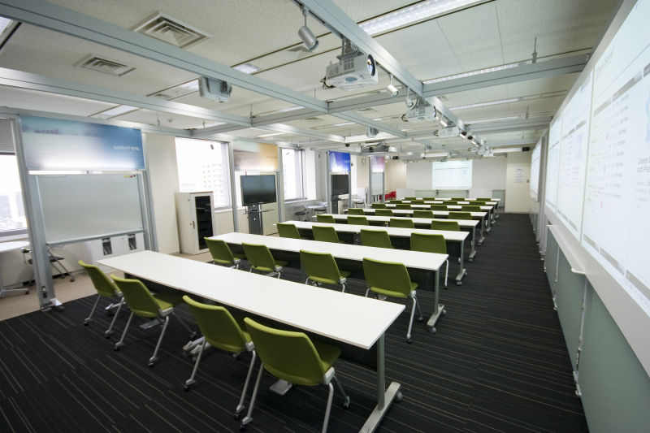

トップエスイーの講義・演習環境をご紹介します．
国立情報学研究所(NII)の20階にある，グループディスカッションのための最新の設備を備えた講義室で講義・演習を行います．
プロジェクタ12台，インタラクティブパネル等を備え，グループディスカッションを行いやすい環境となっています．

講義室には，各受講生用にWindowsベースのクライアントが備え付けられています．講義・演習で必要になるツールはインストール済みであり，すぐに利用可能です． リモートデスクトップ機能を利用して，受講生の自宅からも同じ環境にアクセスできます．講義中で出題された課題に取り組みやすくなっています．
NIIで運営する教育用クラウドが利用可能です．edubase Cloud は，すべてオープンソースソフトウェアを用いて構築されており，PCサーバ200台，1600コアからなる本格的なクラウド環境です．トップエスイーではクラウドコンピューティングに関する諸講義を行うほか，一般の講義の演習環境としてもedubase Cloudを利用しています．
国内外で広く利用されている moodle をベースとした講義管理システム(LMS)を使用しています．講義資料のダウンロード，ビデオコンテンツの視聴，レポート提出などが，ウェブブラウザ上で行えます．
受講されている方々には講義管理システムのアカウントを配布します．そのアカウントを利用して，受講者ポータルというWebシステムへの管理ができます．科目の履修登録，成績や取得した単位数の参照，講義受講後などに行われる調査等で，このシステムを利用しています．
一部の講義についてはライブで配信しています．通学が困難な地域にお住まいの方でも，パソコンを利用して遠隔から受講していただくことが可能です．
全講義をビデオ録画しています．業務都合でどうしても出席できなかったときには，ビデオ視聴によって補うことができます．また，レポート作成の際，講義で説明されたことを思い出すために視聴するなど，有効に活用されています．
トップエスイーの講義見学は随時受け付けております． その他，受講資格・講義内容などのご質問がございましたらお気軽に下記連絡先の事務局までお問い合わせください．